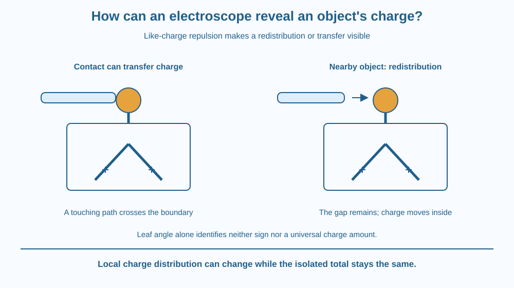

Explain how an electroscope converts a change in charge distribution into visible leaf movement. Distinguish contact charging from the response to a nearby object. Recognise why spreading leaves do not, by themselves, identify the charge sign or measure a universal amount of charge.
A detector has a metal terminal connected to two light leaves. A charged object brought near the terminal can make the leaves separate, even without touching them. Under other conditions, touching the terminal can leave a longer-lasting change after the object is removed.
The visible movement is not caused by a hidden motor. Charge distribution changes within the conducting parts, and the two leaves can acquire like charge.
To explain the detector, follow the charge rather than treating leaf angle as a magic yes-or-no signal with no mechanism behind it.
An electroscope is a device that indicates electrical effects through the motion of a light part. In a simple leaf design, a conducting terminal and stem connect to two light conductive leaves. An insulating support limits unwanted charge flow to the surroundings.
Like charges repel. If both leaves have charge of the same sign, their electrical interaction tends to push them apart. Their weight and mechanical arrangement oppose unlimited separation, so an observed position reflects a balance.
If a suitable charged object touches the terminal, charge can be transferred through contact. The final distribution depends on the objects and their surroundings. The leaves may remain separated after the object is removed if charge has been left on the detector and has not leaked away.
A nearby charged object can also cause redistribution without contact. Mobile charges in the conductor rearrange in response to its field. The terminal region and lower leaves can then have different local charge distributions while the isolated detector's overall charge remains unchanged.
In a simple initially neutral detector, the two leaves can obtain like charge during this redistribution and spread. When the external object is removed without other changes, the induced separation can reduce again. This response must not be described automatically as permanent charge transfer.
An initially uncharged electroscope can respond to either sign of nearby charge. Leaf separation alone therefore does not tell you positive versus negative. Determining sign requires an appropriate comparison method and known initial conditions beyond simply watching one unknown deflection.
Leaf angle also depends on geometry, mass, stiffness, humidity and leakage. The same angle on two different homemade devices does not establish the same charge. An electroscope is not automatically a calibrated charge meter.
Damp surfaces and imperfect insulation can allow charge to leak. Mechanical vibration or airflow can move leaves too. A careful interpretation distinguishes electrical response from those disturbances rather than attributing every motion to a charged object.
Draw one continuous conducting path from terminal to stem and leaves. Put same-sign symbols on both leaves and outward arrows between them. This shows the immediate mechanical reason for spreading.
In a second picture, bring an external charged object near without contact. Redistribute charge symbols within the detector while keeping its total unchanged. Then remove the object and reverse the redistribution in the model.
For contact charging, draw a separate transfer arrow across an actual touching point. Keeping the two pictures distinct prevents the mistaken rule that every nearby-object response means electrons crossed an air gap into the detector.
The SVG compares contact transfer with no-contact redistribution. Both panels include a terminal, conducting stem and two leaves, with like-charge markers on the leaves where spreading occurs.
The no-contact panel has a visible gap between the test object and terminal. An internal redistribution arrow stays within the detector. The contact panel uses a transfer arrow across the touching region.
The illustration uses conceptual charge symbols rather than measured particle counts. Its caption says that angle alone identifies neither a universal charge amount nor its sign. The device is shown for explanation, not as a construction requiring sharp foil or glass parts.

Electroscopes illustrate how an invisible electrical arrangement can become a visible mechanical effect. That conversion is a general instrument principle: a detector links a target phenomenon to an observable response.
In school demonstrations, dry conditions and suitable insulation often matter. A weak response can reflect the apparatus or surroundings rather than proving that the tested object has no electrical influence.
Never connect an electroscope or any homemade detector to a wall socket, battery pack intended for high voltage or unknown equipment. The lesson concerns small static effects and a paper model; it is not an invitation to investigate household wiring.
Use paper, a pencil and two colours for charge symbols. No foil cutting, glass container or electrical supply is needed.
Ask a partner to identify which picture requires material contact and which does not. The symbol count is a bookkeeping model, not the real number of electrons. Do not infer an exact charge or sign from the size of your drawn leaf angle.
If a detector begins already charged, why can its response to a new nearby object differ from the simple neutral-detector example? Identify the initial condition that must be known before interpreting a change.
Now imagine leaves moving because someone blows on them. What comparison would help distinguish that disturbance from an electrical effect? A detector's visible output needs a tested connection to its intended cause.
Why do like-charged electroscope leaves separate?
Answer: C — Like-charge repulsion produces an outward electrical force on the light leaves.
How can a nearby object affect an isolated neutral electroscope without touching?
Answer: B — The external field can change local charge distribution without contact transfer.
Two different electroscopes show the same angle. What should you avoid assuming?
Answer: A — Angle depends on apparatus and conditions, so it is not a universal charge calibration.
Create a two-panel explanation labelled contact and no contact. Track total detector charge and local leaf charge separately. Include the mechanical reason for spreading in both appropriate examples.
Add a limitation stating that an unknown deflection does not automatically reveal charge sign. Your explanation must not introduce a hidden electrical current from a wall supply or claim that electrons always jump across the gap merely because the leaves move.
A detector can show an electrical response while its total charge remains unchanged. Redistribution within the conductor is enough to change local forces. This illustrates why knowing only a whole object's total charge can miss the spatial arrangement that determines its behaviour near another object.
An electroscope's like-charged leaves repel; contact can transfer charge, while a nearby object can redistribute it without changing the isolated detector's total.